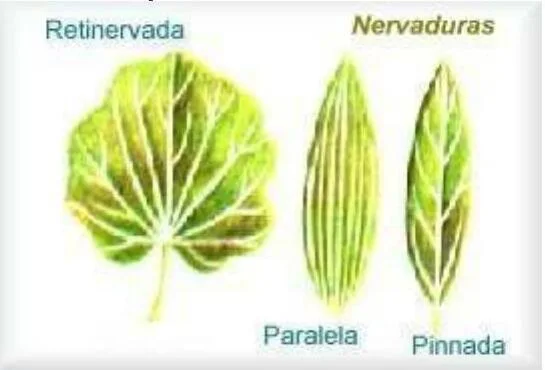

Módulo 05 · 30 minutos
Hoja, tallo y raíz: anatomía con un propósito
Al terminar, vas a poder describir las partes y funciones de hoja, tallo y raíz, y reconocer modificaciones que pueden convertirse en materia prima.
Dos hojas sobre la mesa
No conocemos sus nombres. Una es larga y estrecha; sus líneas corren casi paralelas desde la base hasta la punta. La otra es ancha y está recorrida por una red. Antes de identificar la especie, las nervaduras ya nos permiten ubicar cada hoja en uno de dos grandes grupos.
Leer una planta empieza así: no adivinando el nombre, sino observando cómo está construida.
La hoja: una superficie que trabaja
La hoja es el órgano fotosintético primario y tiene una segunda función decisiva: la transpiración. Su forma es plástica; puede cambiar incluso dentro del mismo árbol. Por eso una característica aislada no siempre alcanza, pero varias señales reunidas construyen una lectura confiable.
La gran superficie de la hoja es el . Allí se reconocen ápice, margen y base, tres zonas muy variables. El conecta la lámina con el tallo. Cuando falta, la hoja se llama sésil o sentada.
Las nervaduras sostienen la hoja y conducen sustancias. En las monocotiledóneas avanzan en un solo sentido sin formar red; en las dicotiledóneas se ramifican sobre una lámina extensa y delgada.

Seguí las líneas
Recorré con el dedo cada nervadura. La hoja ancha de la izquierda forma una red; la hoja central muestra líneas paralelas. ¿Cuál asociarías con una dicotiledónea y cuál con una monocotiledónea? No mires primero el contorno: dejá que el patrón interno responda.
Simple, compuesta o rama
Una hoja simple tiene el limbo en una sola pieza. Una compuesta está dividida en folíolos. La dificultad aparece cuando una hoja compuesta parece una rama con hojas pequeñas. La señal que resuelve el problema es la yema: las yemas están en las axilas de las hojas, pero nunca en las axilas de los folíolos.
La hoja cumple fotosíntesis, absorbe luz e intercambia gases mediante . Además, puede modificarse hasta adoptar formas que solemos llamar con otros nombres: cotiledón, espina, zarcillo, escama, bráctea o pieza floral. Las pequeñas hojas del ajo, por ejemplo, funcionan como escamas protectoras y de reserva alrededor de un tallo subterráneo.
El tallo: sostén y camino
El tallo sostiene la planta y es el eje sobre el que se insertan hojas, flores y frutos. También conduce agua y minerales desde la raíz, distribuye alimentos y hormonas, almacena, respira y, en algunos casos, realiza fotosíntesis.
En el se insertan las hojas. El tramo entre dos nudos es el entrenudo. Las yemas ubicadas en los nudos pueden formar ramas. Más adelante, cuando estudiemos poda, esta geografía decidirá dónde hacer un corte.
Rizoma
Tallo horizontal subterráneo. En especies como el jengibre, lo que se cosecha no es una raíz sino un .
Cormo
Tallo vertical y subterráneo que almacena alimento.
Bulbo
Estructura de reserva donde los nutrientes se acumulan en escamas foliares.
Tubérculo
Porción alargada y terminal de un rizoma.
Estolón
Tallo que se arrastra y puede enraizar en sus nudos.
Cladodio
Tallo verde con apariencia y función semejantes a una hoja.
La raíz: absorber, guardar y sujetar
Al germinar, la radícula se alarga y forma la raíz primaria. De ella nacen raíces secundarias. Una raíz pivotante crece mucho más que las laterales y profundiza, como en la zanahoria. Las raíces adventicias, en cambio, brotan de tallos y no de la radícula.
La raíz absorbe y conduce agua y minerales, acumula nutrientes y sujeta la planta. Esa tarea se reparte en tres tejidos:
- Epidermis: capa superficial con pelos radicales; se encarga de la absorción.
- Córtex: tejido fundamental dedicado al almacenamiento de agua y nutrientes.
- Estela: cilindro vascular que conduce el agua hacia el tallo.
Las amplían esta lectura: la raíz no siempre trabaja sola. La relación con hongos del suelo puede hacer más eficiente la absorción mineral.
Actividad · ¿Qué se cosecha realmente?
Relacioná cada nombre con el órgano o la modificación que interesa:
- vetiver → raíz;
- citronela → hoja o parte aérea;
- sándalo → tallo leñoso o madera;
- ajo → bulbo formado por escamas foliares;
- jengibre → rizoma.
Después elegí uno y explicá por qué llamar «raíz» a todo lo que crece bajo tierra puede llevar a un error.
El cuerpo ya tiene un mapa
Hoja, tallo y raíz sostienen, conducen, absorben y almacenan. Pero la historia de una nueva planta necesita otro conjunto de estructuras. La próxima estación empieza en la flor y termina cuando una semilla encuentra condiciones para despertar.
Guardá esta estación
Cuando puedas explicar la idea central con tus propias palabras, marcá el módulo como completado.